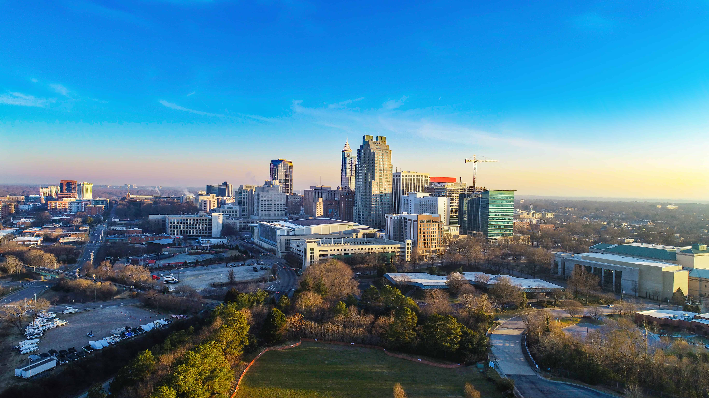

About Raleigh

- Population: Approximately 474,000 (2023 estimate)
- Incorporated: 1792
- Region: Piedmont region (central part of the state)
- Classification: Urban
- Income Level: Above state average
More About Raleigh
Raleigh is known as the “City of Oaks” for its many oak trees that line the streets. It is one of the fastest-growing cities in the United States and is part of the Research Triangle, a major center for high-tech and biotech research and development. The city is also home to several universities and museums, making it a vibrant and educated community.